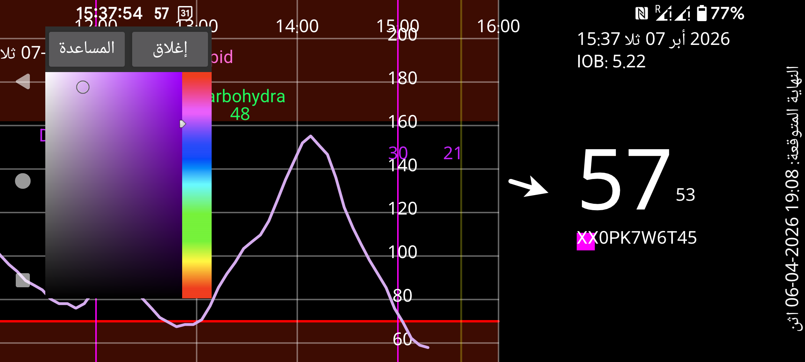

ar be de es fr hi it nl pl pt ru sv tr uk uz zh en
من هنا يمكنك تغيير ألوان القيم والمنحنيات ونقاط القراءة.
اضغط أولًا على نقطة من المنحنى أو على قراءة أو على كمية مُدخلة حتى تظهر معلوماتها، ثم اضغط اللون الذي تريده من نافذة الألوان. سيظهر العنصر بعد ذلك بهذا اللون.
في إصدار Wear OS تحتاج عادةً إلى ساعة فيها زر رجوع؛ فالرجوع بالسحب لا يعمل دائمًا هنا.